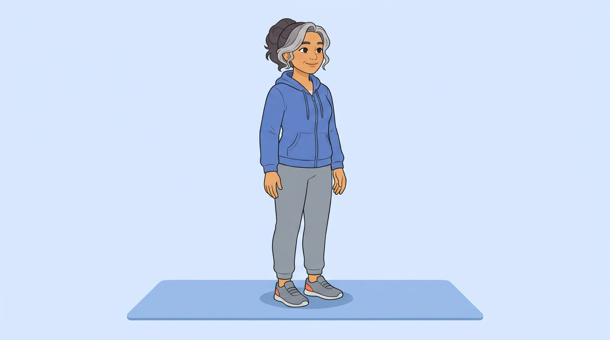
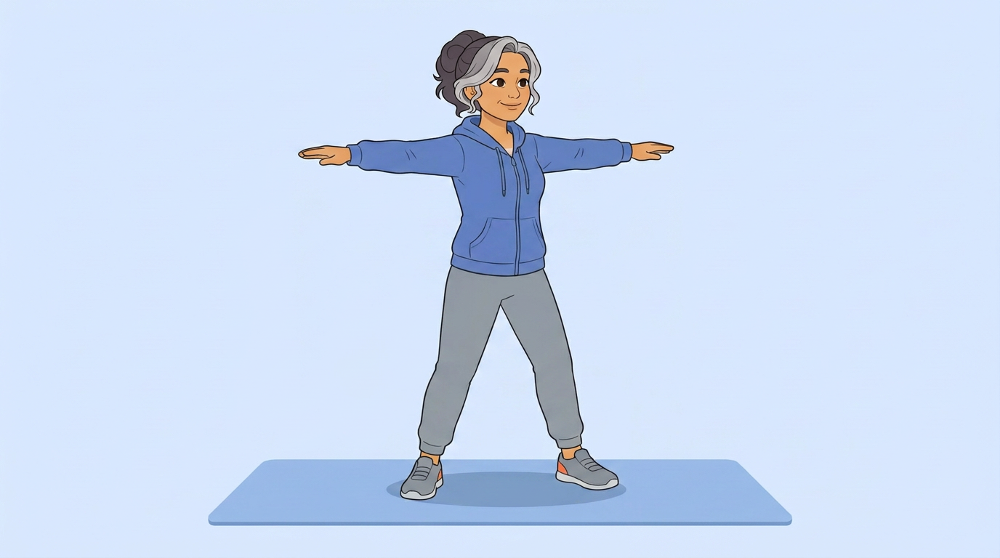

34 · Astride jumps
Relatio's Astride jumps next to COGITO AI's, shown by the Coach woman. Diagonal front-corner view (~45° to her right front).
Jana’s recolored v2 · 10 repetitions · 20 seconds · reviewed 19 November 2026.
Needs revision before Steffen’s final review
All 480 Coach frames were inspected against Relatio. The original video is preserved below for an accurate comparison.
Frame-review findings
- The top of the hair is clipped at the jump peaks.
- The wide landing needs Relatio’s knee bend; repeated moving frames also make the motion uneven.
- The countdown stops at 1 rather than 0.
These findings are still open. This page is a review comparison, not approval of the video.
Relatio starts at 0.63 s near the closed stance. Both play at their original speed; the Coach’s 2.00 s cycle is slightly slower than Relatio’s 1.93 s cycle, so they drift apart.
Astride jumps (Relatio clip)
Front view. Original 45.9-second reference; the feet are cropped in this source.
Astride jumps, Coach woman
Light steel-blue hoodie (#8CA4BB), diagonal front-corner view. 10 reps (20 s), then stops.
Original version
Watch or download v1 (cornflower-blue hoodie). Both video files remain unchanged.
| Relatio | COGITO AI | |
|---|---|---|
| Movement | Astride jumps | Astride jumps |
| Shown by | Anatomy figure | Coach woman |
| Camera | Front view | Diagonal front-corner (~45° to her right front) |
| One rep | 1.933 s (58 frames at 30 fps) | 2.0 s |
| What plays | 45.9-second reference clip | 10 reps (20 s), then stops |
| Sides | Both sides together — symmetric. No alternation, no mirroring needed. | |
Original production pictures and prompts
Historical v1 production record. Recolored v2 uses #8CA4BB; the review findings above describe the rendered result.
Veo 3.1 Fast (half A only) trimmed and assembled into a forward + reverse cycle. Keyframes drawn by Gemini.
Start picture

Peak A picture (feet wide, arms at T)

Start picture prompt
Diagonal front-corner view, camera placed at about 45 degrees to her right front, slightly above waist height: she stands upright in the middle of the mat, turned so the camera sees her body at an angle — her right side is nearer the camera and her left side is further away. Feet together and flat, arms hanging relaxed at the sides, hands open and empty. Clothing: a MEDIUM CORNFLOWER BLUE hoodie (a calm mid-tone blue — lighter than navy, darker than sky blue, like a faded denim or cornflower) fully zipped and closed at the front with no bare skin at the waist, MEDIUM LIGHT GREY trousers (soft mid-grey, not too pale), grey sneakers with an orange accent — flat 2D cartoon style with clean outlines and simple shading, opaque coverage. Natural relaxed expression, lips together, mouth closed, eyes open.
Peak A prompt (Gemini keyframe edit)
after a light hop she has landed back on the mat with the feet about one and a half shoulder widths apart, both feet flat, knees soft; both arms are raised straight out to the sides to shoulder height, palms down, hands open, making a T shape. Trunk upright, head level. The diagonal view shows her full body at an angle — both legs readable, arms extended sideways, no framing of the groin. Natural relaxed expression, lips together, mouth closed, eyes open.
Motion prompt (Veo)
she makes a light hop. While the body is in the air — before the feet land — both arms are already rising out to the sides. The arms travel upward DURING the hop so that they arrive at shoulder height AT THE SAME INSTANT the feet touch down wide. By the time the feet land the arms are already fully extended sideways at shoulder level. The arms do NOT rise after landing — they rise during the jump. Face stays natural, lips together, mouth closed throughout.